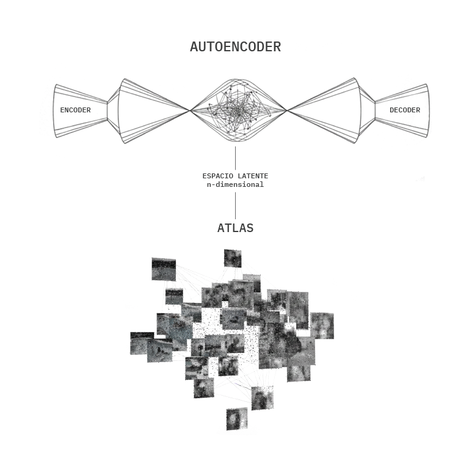

El eco en el vector: un espacio matemático del imaginario familiar
CONTEXTO | ATLAS DE LA MEMORIA: UNA MÁQUINA PARA PENSAR EL ARCHIVO FAMILIAR
En diciembre de 2023, en el Medialab de la Cinemateca de Bogotá, llevé a cabo el taller Atlas de la memoria: una máquina para pensar el archivo familiar. El proyecto partió de una premisa a la vez técnica y poética: usar modelos de inteligencia artificial para explorar el imaginario de la familia colombiana de finales del siglo XX y principios del XXI.
A través de un proceso de digitalización y preprocesamiento, las y los participantes aportaron imágenes de sus archivos personales y familiares, que se integraron en un dataset1 de aproximadamente 1300 fotografías. El taller se planteó como un ejercicio de investigación‑creación que buscaba establecer un paralelo entre nuestros mecanismos humanos de asociación y los métodos cuantitativos de las máquinas.
Para trabajar con este archivo se entrenó una red neuronal que aprende a comprimir y reconstruir las imágenes, un tipo de modelo conocido como Autoencoder2. En términos simples, un Autoencoder funciona como una fotocopiadora inteligente: toma cada fotografía, la reduce a un código muy compacto y luego intenta reconstruirla, de modo que aprende qué rasgos son realmente importantes y cuáles puede desechar.
A partir de este modelo se extrajeron las llamadas representaciones del espacio latente3 de las fotografías, es decir, su traducción a vectores numéricos dentro de un espacio matemático donde cada imagen se vuelve un punto con ciertas coordenadas. Estas representaciones luego se agruparon mediante algoritmos de clustering4, que organizan las imágenes en conjuntos según su proximidad en ese espacio latente.
El resultado fue una constelación cercana a los atlas de Aby Warburg. Su Atlas Mnemosyne5 fue un dispositivo para pensar las imágenes: paneles de tela negra cubiertos de fotografías y reproducciones, movidas una y otra vez, como una mesa infinita donde ciertos gestos y motivos se buscaban entre sí.
En este caso, ese espíritu warburguiano se trasladó a un entorno digital en realidad virtual desarrollado con A‑Frame6, un framework web de código abierto que permite construir escenas tridimensionales y experiencias inmersivas directamente en el navegador usando HTML y la API WebXR. En ese espacio tridimensional, las imágenes flotan agrupadas según afinidades visuales calculadas por el algoritmo y luego afinadas por la curaduría de las y los participantes.
I. EL MAPA NO ES EL TERRITORIO
En su brevísimo relato Del rigor en la ciencia, Borges nos advierte sobre la inutilidad del mapa que, en su afán de exactitud, termina por cubrir el imperio hasta coincidir punto por punto con el territorio.
Sin embargo, en la práctica con modelos de deep learning1, el mapa no radica tanto en la aproximación al mundo por medio del dataset (aunque, de alguna forma, también lo hace). El mapa —o mejor, el mapeo— es, en esencia, una función matemática que asigna elementos de un dominio (el dataset de fotografías) a un codominio vectorial, es decir, a representaciones en vectores dentro de otro espacio matemático.
Entender el mapa en términos matemáticos y también de representación nos permite desplazar la mirada de la literalidad del archivo hacia la estructura de sus relaciones. El espacio latente funciona como una topografía que nos deja navegar complejidades para la imaginación humana, limitada por nuestra percepción atrapada en tres dimensiones.
Mientras el mapa de Borges fracasa por su rigidez y su escala 1:1, el mapeo algorítmico del Atlas de la memoria propone un mecanismo de abstracción. Esta operación no pretende capturar la totalidad de la memoria, sino ofrecer un esquema de ordenamiento técnico: una posibilidad para examinar el archivo ya no como lista estática, sino como sistema dinámico de proximidades y distancias calculadas.
II. LA IMAGEN OPERATIVA Y SU NATURALEZA DIGITAL
Para pensar el archivo digital hoy, es necesario reconocer el cambio de ontología de la imagen que proponen autores como Harun Farocki y Jussi Parikka.
Hemos transitado de la imagen técnica1 (en términos de Flusser), que aunque proviene de dispositivos tecnológicos se ofrece a la mirada humana para ser contemplada, hacia la imagen operativa: imágenes creadas no solo para el ojo humano, sino para ser procesadas por sistemas de cálculo. Las fotografías de nuestros álbumes, al entrar en el flujo del machine learning, activan esta naturaleza técnica pero también operativa: dejan de ser recuerdos estáticos para convertirse en datos.
El uso de un Autoencoder en el Atlas funcionó como dispositivo de interpretación numérica. Al ser un modelo de aprendizaje no supervisado, el algoritmo no busca categorías narrativas impuestas desde afuera (“familia”, “fiesta”, “cumpleaños”, “piscina” o “paseo”), sino que comprime las imágenes a su esencia estructural para luego intentar reconstruirlas.
En este proceso de síntesis, la imagen se despoja de su anécdota y sobrevive lo que Parikka define como la materialidad del medio: patrones de iluminación, texturas, geometrías, etc. Esta metamorfosis hace posible el mapeo: al reducir la imagen a vectores numéricos n-dimensionales, el gesto se vuelve un valor posicional relativo a su lugar en un espacio matemático.
Es esta capacidad de procesamiento la que nos permite desplazar el método de Warburg hacia nuevas y más altas dimensiones. Aquí la correspondencia ya no depende de una asociación subjetiva bidimensional, sino de una arquitectura de datos donde la imagen opera en relación con las demás.
III. DEL (X,Y) DE WARBURG AL (X,Y,X,…,N) DEL ESPACIO LATENTE
El Atlas Mnemosyne de Aby Warburg fue definido por él mismo como una “máquina para pensar las imágenes”. Sin embargo, esa máquina operaba en la bidimensionalidad del panel de tela, limitada por la contigüidad física y la asociación visual analógica. El Atlas de la memoria retoma ese artefacto diseñado para “hacer saltar correspondencias”, pero lo traslada a la naturaleza de lo digital, donde las relaciones pueden ser calculadas por algoritmos a partir de características técnicas difíciles de mapear manualmente.
Mientras Warburg buscaba las pathosformel1 (fórmulas del gesto y la emoción) en una superficie plana, el deep learning permite pensar el archivo en espacios n‑dimensionales. Al utilizar técnicas de reducción de dimensionalidad como T‑SNE2 para proyectar el espacio latente en un entorno de realidad virtual desarrollado con A‑Frame, se construye una cartografía inmersiva.
No estamos ante un mapa que cubre el territorio, sino ante una interfaz que permite habitar la estructura matemática del archivo. En esta nube tridimensional, las imágenes flotan agrupadas por afinidades calculadas por el algoritmo: una fotografía de 1950 puede orbitar cerca de otra de 1990 por una coincidencia en la temperatura del color o en la disposición de los cuerpos dentro del encuadre. El Atlas se convierte así en un sistema dinámico, un dispositivo que no reemplaza al archivo, sino que expande su capacidad de ser pensado desde las herramientas de procesamiento del presente.
IV. REPRESENTACIONES ESPECTRALES EN LAS IMÁGENES SINTÉTICAS
En el Atlas de la memoria las imágenes fotográficas (ahora denominadas “naturales” en contraposición a las “sintéticas” generadas por algoritmos) de los álbumes familiares conviven con sus reconstrucciones sintéticas generadas por el Autoencoder. En apariencia, ambas se refieren al mismo gesto, al mismo cumpleaños, al mismo viaje; sin embargo, las segundas aparecen desintegradas, desvanecidas, como si la máquina recordara algo que nunca vio del todo.
Ese desajuste no es un error colateral, sino el resultado directo de las condiciones del experimento: un dataset relativamente pequeño1, un Autoencoder sencillo y un entrenamiento que no alcanza la fidelidad fotográfica que persigue la industria. El modelo reconstruye rostros y cuerpos como presencias fantasmagóricas2, figuras que parecen estar a punto de emerger pero se quedan suspendidas en una zona intermedia entre lo reconocible y lo extraño.
Esta tensión abre un diálogo entre la imagen "original" y su doble sintético. La fotografía analógica o digital de familia afirma: "esto ocurrió así"; su reconstrucción algorítmica, en cambio, dice: "esto es lo que la máquina alcanza a recordar de eso que ocurrió". Entre ambas se instala un espacio de incertidumbre donde la memoria ya no es pura evidencia, sino negociación entre lo vivido, lo archivado y lo que el modelo es capaz de recomponer.
Al exhibir estas reconstrucciones incompletas junto a las imágenes de origen, la obra hace visible la fragilidad técnica del sistema y, al mismo tiempo, su potencia imaginaria. La falla se vuelve método: lo borroso, lo mal reconstruido, lo que no encaja del todo, señala los bordes de lo que la máquina puede o no puede sostener de nuestra memoria familiar.
V. UN TEJIDO COLECTIVO DE AFECTOS Y ARTEFACTOS
Al final, esta obra no pretende imponer un nuevo dispositivo de relaciones entre imágenes, sino permitir pensar el archivo familiar y habitarlo desde la idea que originó este proyecto: nuestras memorias privadas son, en realidad, un tejido colectivo.
Al navegar la nube de puntos, el modelo de deep learning nos devuelve una intuición tan técnica como poética: los álbumes de casi todas las familias se parecen demasiado. La misma torta de cumpleaños, el mismo encuadre frente al mar, la foto de los hermanos frente a la fachada de una casa en construcción, el mismo gesto contenido ante el lente.
En el espacio latente, nuestras tías y abuelos dejan de ser individuos aislados para orbitar en una misma constelación de serialidad. Navegar este Atlas es entender que el gesto (esa pathosformel que Warburg perseguía entre paneles de tela) sobrevive a la digitalización y a la individualidad.
No importa cuántas capas de abstracción matemática interpongamos: en el centro de cada vector sigue latiendo la revelación de que somos parte de un mismo imaginario técnico, emocional y social. La máquina hiperdimensional no nos aleja del pasado; nos lo devuelve transformado en eco, recordándonos que en el rigor del cálculo, el archivo familiar no es un diario privado, sino un espejo donde todos, inevitablemente, nos parecemos.
Actualmente la obra hace parte de la Exposición MEDIAEXP en la Galería de la Cinemateca de Bogotá.
VER LA OBRA EN GITHUB →CITAS
CONTEXTO: ATLAS DE LA MEMORIA
1. Dataset: Conjunto estructurado de datos usado para entrenar modelos de IA. Wikipedia
2. Autoencoder: Red neuronal que comprime y reconstruye datos para aprender representaciones esenciales. Ian Goodfellow et al., Deep Learning (MIT Press, 2016), cap. 14. deeplearningbook.org
3. Espacio Latente: Espacio matemático donde datos complejos se representan como vectores comprimidos. Wikipedia
4. Clustering: Técnicas para agrupar datos similares automáticamente. Wikipedia
5. Atlas Mnemosyne: Proyecto visual de Aby Warburg con paneles de imágenes para estudiar memoria cultural. proyectoidis.org
6. A‑Frame: Framework WebVR para crear experiencias 3D en navegadores. aframe.io
I. EL MAPA NO ES EL TERRITORIO
1. Deep learning: Subcampo de inteligencia artificial con redes neuronales profundas. Yann LeCun et al., "Deep Learning" (Nature, 2015). nature.com
II. LA IMAGEN OPERATIVA Y SU NATURALEZA DIGITAL
1. Imagen técnica: Concepto de Flusser: imágenes generadas por dispositivos técnicos. Wikipedia
III. DEL (X,Y) DE WARBURG AL (X,Y,X,…,N) DEL ESPACIO LATENTE
1. Pathosformel: Término de Warburg para fórmulas emocionales en imágenes. Wikipedia
2. T‑SNE: Algoritmo de reducción de dimensionalidad de datos multidimensionales. Laurens van der Maaten y Geoffrey Hinton, "Visualizing Data using t-SNE" (2008). lvdmaaten.github.io
IV. REPRESENTACIONES ESPECTRALES EN LAS IMÁGENES SINTÉTICAS
1. Datasets pequeños generan reconstrucciones con artefactos notables en autoencoders. arXiv:2007.08891
2. Fenómeno del "uncanny valley" en imágenes sintéticas de inteligencia artificial. TechCrunch